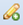

Редактирование
Инструмент Создать новый объект слоя используется для добавления нового объекта в редактируемом слое. Аналогичен кнопке  на панели редактирования панели главного меню.
Инструмент Редактировать объект слоя используется для изменения существующего объекта в редактируемом слое. Аналогичен кнопке на панели редактирования панели главного меню.